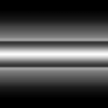
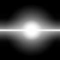
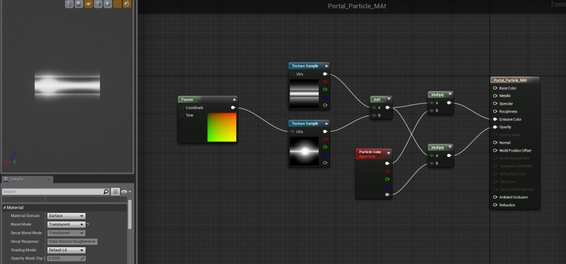
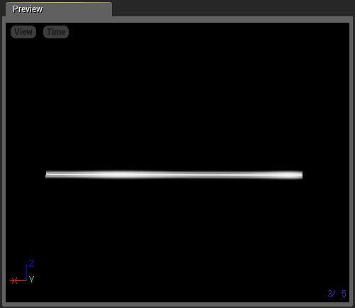
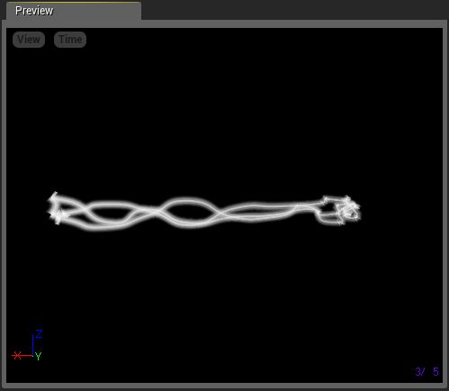
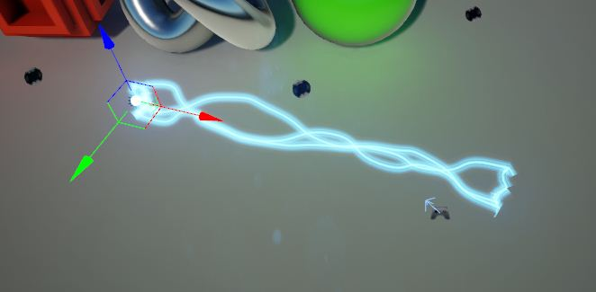
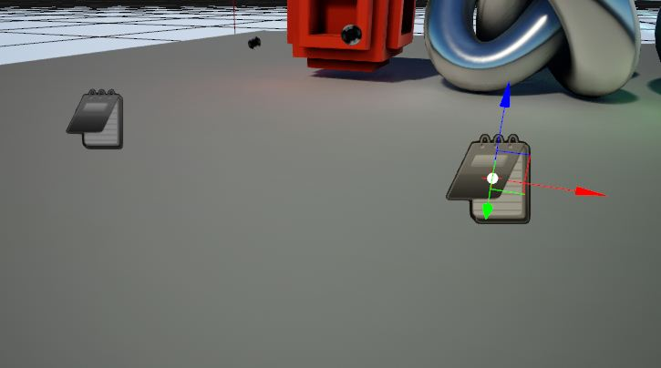
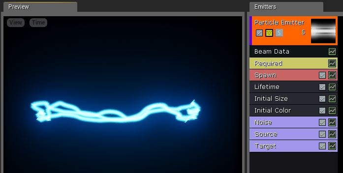

Beam Particle (Tutorial)
Contents
Overview
Beams are a great way to simulate lasers, lightning, or any type of similar effect that needs to travel along the length of a beam. This document provides an overview of how to set up a basic beam emitter.
Beam Setup
Setup of functional weapon beams (such as laser cannons) requires coding/scripting and lies outside the scope of this document. Here, we will be focusing on the effect only. |
To properly set up a beam emitter, you will need a material with the right kind of texture. Generally, if you want a continuous beam, you will need a texture that seamlessly spans horizontally across the image. In our example, we have set up a very simple material using the following textures:
-

-

These textures are combined together in the following material:

Once we have added this to our new particle system, we are ready to focus on the beam itself. First, we add a Beam TypeData module by right-clicking in the emitter and choosing TypeData > New Beam Data.

This gives us a beam emitter. However, further setup is required to get anything interesting. Use the following table for some initial settings:
| Property | Value | Reason |
|---|---|---|
| Lifetime Module | ||
| Lifetime | 0.0 | Allows the beam to be constant (live forever). |
| Beam Data Module | ||
| Beam Method | PEB2M_Distance | The beam will be calculated via distance along the emitter's X-Axis, rather than requiring a source and target. |
| Texture Tile Distance | 500 | Tiles the texture every 500 Unreal Units. Allows animated pulses to show more clearly. |
| Max Beam Count | 3 | Adds in a few more beams, which will look nice once we have noise. |
| Speed | 0 | Beam will travel instantly to its target. |
| Interpolation Points | 50 | Gives the beam some flexibility for the addition of noise, which we will do later. |
| Distance | 1000 | Extends the beam 1000 Unreal Units along the X-Axis, giving us something to work with. |
Once these properties are set, delete the Initial Velocity and Color Over Life modules. Add back in an Initial Color module.
Your beam should now look something like this:

Adding Noise
You can make a beam more visually interesting by adding some noise to it. This is done with the Noise module. This module jitters the beam around, completely changing the nature of the effect. It is found under the Beam submenu of the module context menu.

Use the following table to adjust some settings:
| Property | Value | Reason |
|---|---|---|
| Frequency | 30 | Gives us a nice amount of noise. Adjust to taste. |
| Low Freq Enabled | Checked | Enables randomization of noise points. |
| Noise Range | Vector Uniform distribution. Min:( 0, -50, -50) Max:( 0, 50, 50) | Tells the noise how far it can move away from the beam. |
| Noise Tessellation | 10 | Smoothes out the noise. |
| Frequency Distance | 100 | Rounds out the shape of the noise. |
Your beam should now look something like this:

Tweak values to taste.
Source and Target
If we were to drop this beam emitter into a level right now, it would simply point down the local X-Axis of the emitter actor, like so:

However, this isn't always ideal. In some cases, you will want to specify a source point and target point for the beam, and control interpolation between these points. This is where you can use the Source and Target modules.
First, we will add 2 actors into the scene that we can use as source points. In this case, we used Note actors. These will become the source and target for the beam.

Back in Cascade, add a Source and a Target module to your emitter. These are both found under the Beam submenu.

In the Beam Type Data, Source and Target modules, adjust the following settings:
| Property | Value | Reason |
|---|---|---|
| Beam Data Module | ||
| Beam Method | PEB2M_Target | Extablishes that the beam will require a source and a target. |
| Source Module | ||
| Source Method | PEB2STM_Actor | Tells the beam to start at the location of an actor. |
| Source Name | BeamSource | Tells the beam to start at the location of an actor. |
| Source | Vector Constant Distribution. Value:(0, 0, 0) | This sets the display source in the Preview window to be 0,0,0. |
| Target Module | ||
| Target Method | PEB2STM_Actor | Tells the beam to end at the location of an actor. |
| Target Name | BeamTarget | This is just a parameter name and can be anything you like. |
| Target | Vector Constant Distribution. Value:(1000, 0, 0) | This sets the display target in the Preview window to be 1000,0,0. |
Your beam will now look just like it did previously, but is now ready to have actors set up as the source and target.
Setting Up Source and Target Instance Parameters
To make the beam use the note actors as source and target, we must establish them as Instance Parameters for the emitter actor. This document will give only an overview of this process. For more information on setting up Instance Parameters, please see the Instance Parameter example page.
Once you have brought the beam emitter into the scene, do the following:
- Set up 2 instance parameters on the emitter actor. Name the first BeamSource and the second BeamTarget.
- Set both of their Param Type properties to PSPT_Actor.
- Set one of the note actors into the Actor field of each parameter. This may require that you lock the Details panel for convenience.
When finished, your details panel should look something like this:

Your beam now moves between the two note actors:

Source and Target Tangents
You can make the path of the beam much more interesting by adjusting the tangents of the source and target.